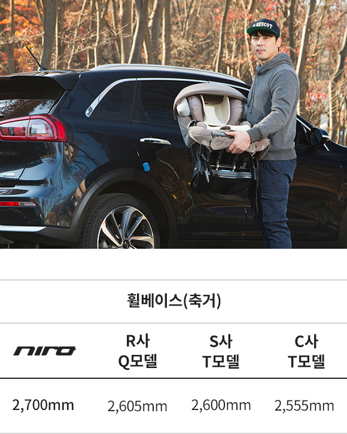

프레스티지 등급 18인치 휠을 장착하여 운행 중이며,
출퇴근시 고속화도로 70%, 일반국도 30% 정도의 비율로 왕복 50km 운행하고 있습니다. 연비에 신경 쓰지 않고 운전해도 평균 20km/L 이상은 나온답니다.
그리고 여성의류 사업을 하고 있는 저는 대봉
(의류업계에서 사용하는 큰 봉투를 말함)이 2열 좌석 폴딩시 10개 이상이 적재되어 너무 편하게 일 하고 있습니다.
니로는 겉모습과는 다르게 SUV로서 상상 이상의 적재공간을 갖고 있답니다.
통풍시트와 2열 송풍구, LED 리어램프, 크루즈 컨트롤, 버튼 시동키, 스마트키 같은 편의사양들이 중간 등급에도 많이 적용되었지요. 특히, 통풍시트와 2열 송풍구는 정말 HIT네요~ 여름철에 땀이 많이 차서 에어컨으로는 만족하지 못했던 저 같은 ‘땀맨’한테는 딱입니다. 2열 송풍구는 아이가 있는 집이라면 필수입니다.
* 위 정보는 각 제조업체의 카다로그 및 홈페이지에 공개된 자료를 바탕으로 작성하였습니다.
타사 소형 SUV보다 긴 휠베이스는 니로 만의 장점입니다. 뒷자리에 타는 아내 역시 장거리 운행에도 전혀 불편함이 없었다고 합니다. 처가가 강원도 삼척 산골이라서 서울에서부터 편도 300km를 명절마다 왕복하곤 합니다. 그 동안 장인, 장모님을 자주 찾아 뵙지 못했었는데 이제는 자주 찾아 뵐 수 있겠네요.
얼마 전, 그 동안 길들이기로 봉인되었던 스피드에
대한 욕망이 끌어 올라왔습니다. 스포츠 모드로 변경하자마자 반응이 옵니다.
엔진소리는 살짝
거칠어지고, 핸들은 묵직해집니다. 스포츠 모드는 1,600cc 맞나 싶을 정도로 경쾌하게 치고 나가네요.
핸들링, 코너링도 제 생각보다는 훨씬 우수하게
평가됩니다. SUV는 코너링이 안 좋을 것 같다는 저의 편견 역시 니로가 단번에 없애주네요.
한번은 처가에서 서울 집으로 출발한 뒤 5분도 되지 않아 풀브레이킹을 밟을 수밖에 없었습니다. 제 차 앞에 멧돼지 7마리가 나타났지 뭐에요. 저는 멧돼지와 1미터 간격을 남겨두고 멈춰 섰습니다. 차를 멈춰 세운 뒤 아이와 아내를 살폈는데 다행히도 아이도 카시트에 잘 타고 있었고, 아내도 다치지 않았습니다. 이번에 풀브레이킹을 해보니 4P브레이크랑 비교할 순 없지만 풀브레이킹 시에 잘 선다고 말씀 드리고 싶습니다. 이상으로 제가 있었던 일들과 느낀 점을 써보았는데 지루하진 않으셨는지 모르겠네요. 지금까지도 만족스럽고 앞으로도 실망시키지 않을 것만 같은 니로의 시승기였습니다. 끝까지 읽어주셔서 감사합니다.